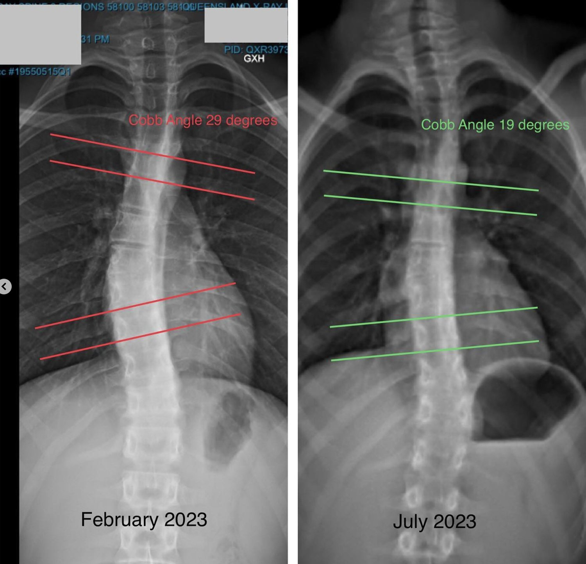

Spinal decompression is a common treatment for back pain, but not all methods are created equal. Many people turn to spinal decompression machines, traction therapy, or chiropractic care to relieve pressure on the spinal discs. While these options can provide temporary relief, they fail to address the root cause of spinal compression.
Functional Patterns offers a superior, long-term approach to spinal health by focusing on how the body moves as a whole. Instead of relying on passive treatments like a decompression table or non-surgical spinal decompression machines, we use corrective movement training to fix the patterns that cause spinal issues in the first place. In this blog, we’ll compare Functional Patterns to traditional decompression therapy and explain why it’s the best choice for long-term relief.
Traditional Spinal Decompression: Machines, Traction, and Passive Therapy
Many people searching for "spinal decompression therapy near me" or "back decompression near me" come across treatments like spinal traction, lumbar decompression therapy, and non-surgical spinal decompression treatment. These methods typically involve machines or manual therapy that stretches the spine to relieve pressure on the intervertebral discs.
Some of the most common options for decompression back therapy include:
-
Decompression Table or Back Decompression Machine: A table that slowly pulls the spine apart to reduce pressure. Spinal decompression equipment such as this is a common method. Another term for this therapy is a 'lumbar decompression machine' or 'back decompression table.'
-
Chiropractic Care and Spinal Traction Therapy: Manual adjustments or mechanical traction to stretch the spine.
-
NSD Therapy (Non-Surgical Decompression Therapy): A form of lumbar decompression table treatment that applies gentle stretching.
Types of surgical spinal decompression therapy:
-
Laminectomy – A surgical treatment that removes part of the vertebra (lamina) to create more space for the spinal cord and nerves.
-
Discectomy – Removes part or all of a herniated disc pressing on a nerve.
-
Foraminotomy – Enlarges the openings (foramina) where nerves exit the spine to relieve pressure.
-
Spinal Fusion – Often performed alongside decompression to stabilize the spine by fusing vertebrae together.
-
Artificial Disc Replacement – Replaces a damaged disc with an artificial one to maintain movement while relieving pressure.
Credit: regenexx.com
These treatments can provide short-term relief by reducing pressure on spinal discs, increasing blood flow, and helping with conditions like a bulging disc or degenerative disc disease. However, they do not address why spinal compression happens in the first place, leading to recurring pain and dysfunction.
The Functional Patterns Approach: Fixing the Root Cause of Spinal Compression
Unlike passive decompression therapy, Functional Patterns corrects movement dysfunctions that contribute to spinal compression. The way you walk, stand, and move directly impacts the health of your spine. Poor biomechanics create excessive spinal loading, leading to compressed discs, pain, and long-term spinal degeneration.
At Functional Patterns Brisbane, we focus on correcting movement patterns to naturally decompress the spine. Our approach includes:

Gait Analysis and Posture Correction
-
Instead of lying on a decompression table, we analyze how you walk and stand.
-
Many spinal issues stem from poor posture and inefficient movement.
Functional Strength Training
-
We strengthen the core, glutes, and back muscles to support the spine.
-
Training in a way that integrates movement prevents future compression.
Dynamic Decompression Through Movement
-
Instead of passively stretching the spine, we teach exercises that naturally decompress it.
-
Movements that mimic running, walking, and standing properly relieve pressure on the spine in a way that machines cannot.

Why Functional Patterns is Superior to Traditional Spinal Decompression
Many people turn to "spinal decompression treatments" hoping for a quick fix, but traditional decompression therapy fails to prevent future issues. Here’s why Functional Patterns is a superior alternative:
-
Addresses the Root Cause: Instead of temporarily relieving pressure, we correct movement dysfunctions that lead to spinal compression.
-
No Side Effects: Many decompression machines have risks, such as worsening a slipped disc or causing muscle weakness from passive therapy.
-
Long-Term Results: Functional Patterns restores natural movement, so your spine stays healthy without relying on machines.
-
Improves Overall Quality of Life: By optimising movement, you not only reduce pain but also improve posture, strength, and mobility.

Functional Patterns Brisbane Client - Decompressed Using FP Corrective Exercise

An X-Ray of this clients spinal decompression progress
Choose Long-Term Spinal Health with Functional Patterns
If you’ve been searching for "spine decompression near me" or "lower back decompression machine" options, consider a long-term solution instead. Passive treatments like a spinal decompression table or traction therapy may provide short-term relief, but they do not fix the root cause of spinal issues.
At Functional Patterns Brisbane, we take a different approach—one that corrects the way you move so your spine naturally decompresses without the need for machines. Our method not only relieves pressure on the spine but also strengthens the entire body to prevent future problems.
If you’re serious about fixing your back pain and improving spinal health, contact us today for an assessment. Functional movement is the key to lasting relief
Book Your Functional Patterns Assessment Today!